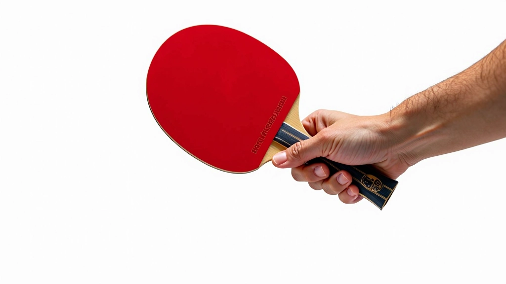
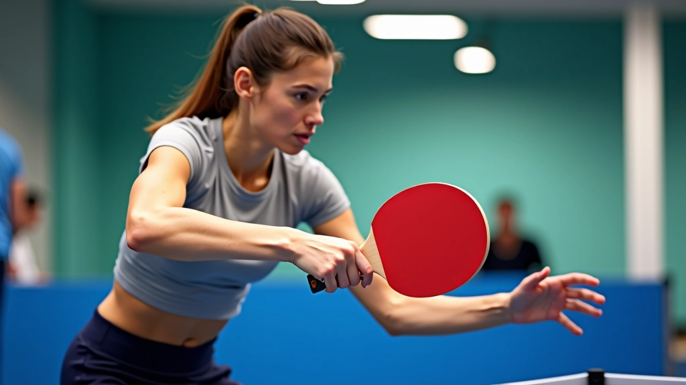

تطوير القوة والثبات في قبضتك
تمارين عملية تساعدك على بناء قوة اليد والمعصم وتحسين التحكم بالمضرب أثناء اللعب...
تعلم كيفية الإمساك الصحيح بالمضرب وتجنب الأخطاء الشائعة التي يرتكبها المبتدئون في البداية
القبضة هي أساس كل شيء في تنس الطاولة. إذا كنت تمسك المضرب بشكل خاطئ، فإنك ستواجه مشاكل في التحكم والدقة والقوة. نحن هنا لنساعدك على فهم كيفية الإمساك بالمضرب بالطريقة الصحيحة من اليوم الأول.
الشيء الجيد؟ تعديل القبضة في البداية أسهل بكثير من محاولة تصحيحها لاحقاً. معظم المبتدئين لا يدركون أنهم يرتكبون أخطاء حتى يبدأ تطورهم في الركود. لا تدع هذا يحدث لك.

قبضة القلم (Penhold) تشبه الطريقة التي تمسك بها قلماً لتكتب. الإبهام والسبابة يلتفان حول مقبض المضرب من الجانب، بينما تستريح الأصابع الثلاث الأخرى على ظهر المضرب.
الفرق الأساسي بيننا وبين الكتابة العادية هو أن قبضتك تحتاج إلى أن تكون أكثر ثباتاً وتحكماً. لا نريد أن تكون مرتخية جداً — هذا سيؤدي إلى فقدان السيطرة. لكننا أيضاً لا نريدها ضيقة جداً — هذا سيحد من حركة معصمك.
النقطة الأساسية: الإمساك الصحيح يجب أن يكون متوازناً. قوي بما يكفي للسيطرة، لكن مرن بما يكفي للحركة.

ابدأ بوضع المضرب على طاولة أمامك برأس المضرب مرتفعاً قليلاً. الآن، ضع يدك بحيث يكون الإبهام والسبابة على جانب واحد من المقبض، والأصابع الثلاث الأخرى على الجانب الآخر.
الإبهام يجب أن يكون على جانب الضربة (جانب اللاعب)، والسبابة تحتاج إلى الاستراحة بشكل طبيعي بجانبه. لا تضغط على الأصابع بقوة شديدة — دع لها مساحة للتنفس. الأصابع الثلاث الأخرى تستريح على ظهر المضرب بشكل مريح.
جرّب الإمساك بالمضرب والتحرك به. يجب أن تشعر بأنه جزء من يدك، وليس جسماً غريباً. إذا شعرت بعدم الاستقرار أو الضيق الشديد، اضبط قليلاً حتى تجد الموازنة المثالية.
معظم المبتدئين يقعون في نفس الفخاخ. تعرف عليها الآن قبل أن تصبح عادات سيئة.
عندما تمسك بالمضرب بإحكام شديد، يتصلب معصمك. هذا يقلل من حركتك ويجعل من الصعب عليك إنتاج قوة. استرخِ قليلاً — يجب أن تتمكن من تحريك معصمك بحرية.
من ناحية أخرى، إذا كانت قبضتك مرتخية جداً، ستفقد السيطرة. المضرب قد ينزلق من يدك أثناء الضربة، أو قد تفقد دقتك. ستحتاج إلى الشعور بتوتر خفيف ثابت.
بعض الناس يضعون السبابة على ظهر المضرب. هذا يقلل من مرونة معصمك بشكل كبير. تأكد من أن السبابة مع الإبهام على جانب الضربة.
يبقى الكثيرون متوترين طوال الوقت. في تنس الطاولة، تحتاج إلى الاسترخاء بين الضربات. هذا يعطيك الطاقة والسرعة عندما تحتاجها حقاً.
خذ المضرب وأمسك به بالطريقة الصحيحة. الآن، حاول الضغط على الزر الخيالي على رأس المضرب 20 مرة. ركز على الحفاظ على القبضة ثابتة لكن مرتخية. يجب أن تشعر بأن معصمك مرن.
أمسك بالمضرب وقم بحركات معصم صغيرة للأمام والخلف، لليمين واليسار. لا تحتاج إلى قوة — فقط اشعر بحرية الحركة. هذا يساعدك على فهم كيفية تحريك المضرب بسهولة.
عندما تشعر بالراحة، ابدأ بضرب الكرة بخفة ضد الحائط أو الطاولة. ركز على الحفاظ على قبضتك الصحيحة. في البداية، لا تقلق بشأن القوة أو السرعة — فقط ركز على الشعور.

تركيز على الإمساك الصحيح فقط. لا تقلق بشأن الضربات المعقدة. ركز على الشعور بالمضرب في يدك والحفاظ على القبضة المريحة.
ابدأ بضرب الكرة بخفة. قد لا تكون دقيقاً جداً، وهذا طبيعي تماماً. المهم هو الحفاظ على القبضة الصحيحة أثناء الحركة.
زيادة السرعة والقوة تدريجياً. بحلول هذا الوقت، يجب أن تشعر بثقة أكبر. ستلاحظ أن قبضتك أصبحت طبيعية أكثر.
القبضة الصحيحة أصبحت عادة. الآن يمكنك التركيز على تحسين تقنياتك الأخرى. سترى فرقاً ملموساً في أدائك.
القبضة الصحيحة هي أساس نجاحك في تنس الطاولة. قد يبدو الأمر بسيطاً، لكن الكثيرين يغفلون عن هذه الخطوة الحاسمة. عندما تبدأ بالطريقة الصحيحة، ستوفر على نفسك سنوات من محاولة تصحيح العادات السيئة.
خذ وقتك. لا تتسرع. الشعور الطبيعي بالمضرب في يدك يستغرق بعض الوقت. ولكن عندما تحصل عليه، ستشعر بالفرق. ستكون أكثر ثقة، وأسرع، وأدق.
هل أنت جاهز للمرحلة التالية؟
استكشف تمارين تطوير القوة والثبات
كتبه
فريق التحرير والمراجعة
كتبه فريق تحرير أكاديمية طنطا، متخصص في تقديم إرشادات عملية وسهلة المتابعة حول إتقان قبضة القلم في تنس الطاولة.
هذه المقالة مخصصة للأغراض التعليمية فقط. المعلومات المقدمة هنا تعتمد على ممارسات شائعة في تنس الطاولة وليست بديلاً عن التدريب المباشر مع مدرب متخصص. كل شخص قد يكون لديه احتياجات وقدرات مختلفة، لذلك من المهم استشارة مدرب محترف قبل تطبيق أي تقنيات جديدة. نحن نوصي بشدة بالحصول على توجيه شخصي لضمان تطبيق التقنيات بشكل صحيح وآمن.
تمارين عملية تساعدك على بناء قوة اليد والمعصم وتحسين التحكم بالمضرب أثناء اللعب...

استكشف الفروقات بين الأسلوب الصيني والأسلوب الأوروبي في قبضة القلم واختر ما يناس...
اكتشف كيفية استخدام حركات المعصم والأصابع بشكل صحيح لتحسين دقتك والتحكم في سرعة...